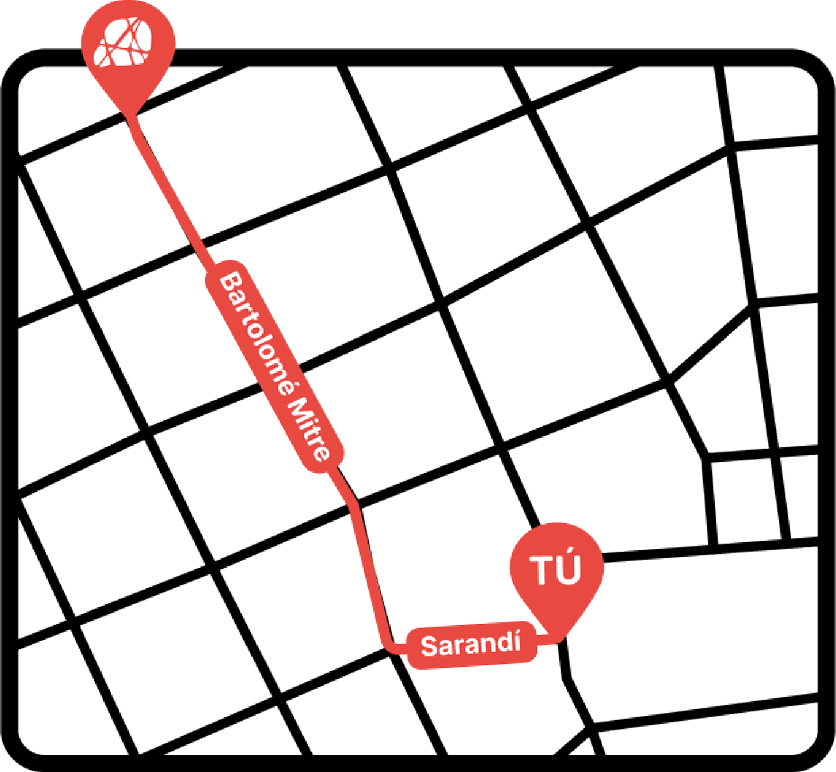

Museo de la Movilidad y las Identidades
Somos un museo de la Intendencia de Montevideo. Aquí contamos cómo las personas se han desplazado a lo largo del tiempo, y cómo esos movimientos han construido nuestra sociedad, las culturas y las identidades.
¿Vamos a descubrirlo?
Estás a cinco cuadras
¡Hola!
Estás en la Puerta de la Ciudadela, ¿Vamos hasta el MuMI?

Este recorrido te guía desde la Puerta de la Ciudadela hasta el museo. Podés seguir la línea en el suelo con tus pasos o seguir escuchando este audio.
Avanzá en línea recta
Caminá despacio pisando la línea en el suelo o camina muy cerca de la pared.
Precaución
Atención: hay una mesa a tu izquierda. El camino se vuelve más angosto. Avanzá con cuidado.
Entrada
Llegaste a Bartolomé Mitre y Piedras. Frente a vos está la entrada principal con un escalón y una puerta de dos hojas. A tu izquierda está la entrada a la Muralla Abierta.
¡Llegaste al MuMI!
Al entrar, vas a encontrar el mostrador a tu derecha. Podés acercarte si necesitás ayuda o información.